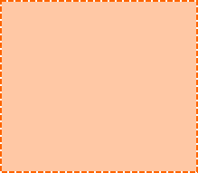

供应商任务众包系统
我的主页


我的任务
我的信息
基本信息
服务能力
社交账号
个人中心
欢迎您，供应商
我的账号
退出
1
3
4
1、有二级导航情况下，出现该【收起】按钮。点击该收起按钮，可收起二级导航。
2、在系统任何页面，点击【个人中心】，刷新当前页，打开【个人中心】-我的任务页面。
3、点击【我的主页】，新开页面，打开我的主页页面。若有多个主页，则展开主页下拉选项（具体参考我的主页交互说明）
4、点击【用户头像】，展开下拉选项。

该部分默认收起
1、框架说明-供给端
• 顶部导航栏的tab（个人中心）为一级导航，左侧导航栏为二级导航。
• 用户登陆系统，默认打开：个人中心-我的任务页面。
• 一级导航在任何页面都存在。
• 一级导航可以均不被选中。如：用户在我的主页、我的账号页面时。（具体参考相应页面交互说明）
• 当用户在我的主页页面时，【我的主页】按钮高亮。（具体参考我的主页交互说明）
我的任务
2
Destiny未眠
化妆师繁子

博
博

有多个主页样式